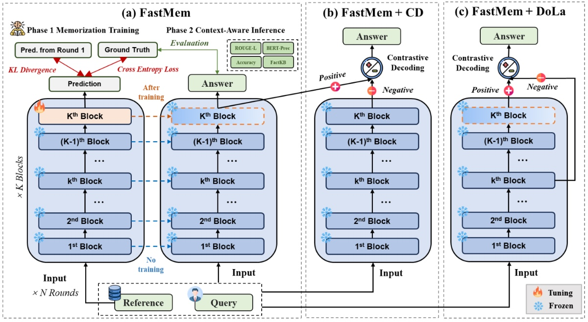

FastMem: Fast Memorization of Prompt Improves Context Awareness of Large Language Models
EMNLP Findings 2024* = Co-first authorsFindings of the Association for Computational Linguistics: EMNLP 2024

In brief
FastMem is test-time training for context faithfulness: before answering, the model briefly "memorizes" its prompt by minimizing next-token loss on it, updating only the last feed-forward module with a KL anchor to the original outputs. Built on the paper's finding that LLMs answer worst exactly where their perplexity on the context is highest (knowledge conflicts), it lifts Llama 3-8B-Inst from 59.1% to 71.6% on NQ-SWAP — in seconds, with no increase in peak memory.
Key takeaways
- The diagnosis: model accuracy correlates negatively with perplexity on the context — on NQ-SWAP, where answer entities are swapped to conflict with parametric knowledge, perplexity rises and accuracy drops sharply versus NQ.
- The fix is targeted: memorize the prompt with a next-token objective plus KL regularization to the initial outputs, updating only the last FFN — cached attention states make this an optimization over a small MLP that finishes in seconds without extra peak memory.
- Naive pretraining-style test-time training corrupts instruction-tuned models; FastMem's chat-template "memorization control tokens" are what make it safe.
- Improves faithfulness where it matters for RAG: Llama 3-8B-Inst rises from 59.1% to 71.6% on NQ-SWAP, and memorizing format instructions cuts Qwen 1.5-4B-Chat's output-structure failures from 34.9% to 25.5%.
- Unlike knowledge editing it needs only the input (no input-output pairs), and it composes with contrastive decoding strategies such as CD and DoLa for further gains.
Abstract
Large language models (LLMs) excel in generating coherent text, but they often struggle with context awareness, leading to inaccuracies in tasks requiring faithful adherence to provided information. We introduce FastMem, a novel method designed to enhance instruction fine-tuned LLMs' context awareness through fast memorization of the prompt. FastMem maximizes the likelihood of the prompt before inference by updating only the last Feed-Forward Network (FFN) module. This targeted approach ensures efficient optimization without overfitting, significantly improving the model's ability to comprehend and accurately follow the context. Our experiments demonstrate substantial gains in reading comprehension, text summarization and adherence to output structures. For instance, FastMem improves the accuracy of Llama 3-8B-Inst on the NQ-SWAP dataset from 59.1% to 71.6%, and reduces the output structure failure rate of Qwen 1.5-4B-Chat from 34.9% to 25.5%. Extensive experimental results highlight FastMem's potential to offer a robust solution to enhance the reliability and accuracy of LLMs in various applications.
BibTeX
@inproceedings{zhu_fastmem,
title = {{FastMem}: Fast Memorization of Prompt Improves Context Awareness of Large Language Models},
author = {Zhu, Junyi and Liu, Shuochen and Yu, Yu and Tang, Bo and Yan, Yibo and Li, Zhiyu and Xiong, Feiyu and Xu, Tong and Blaschko, Matthew B.},
year = {2024},
booktitle = {Findings of the Association for Computational Linguistics: EMNLP 2024},
url = {https://arxiv.org/abs/2406.16069},
}